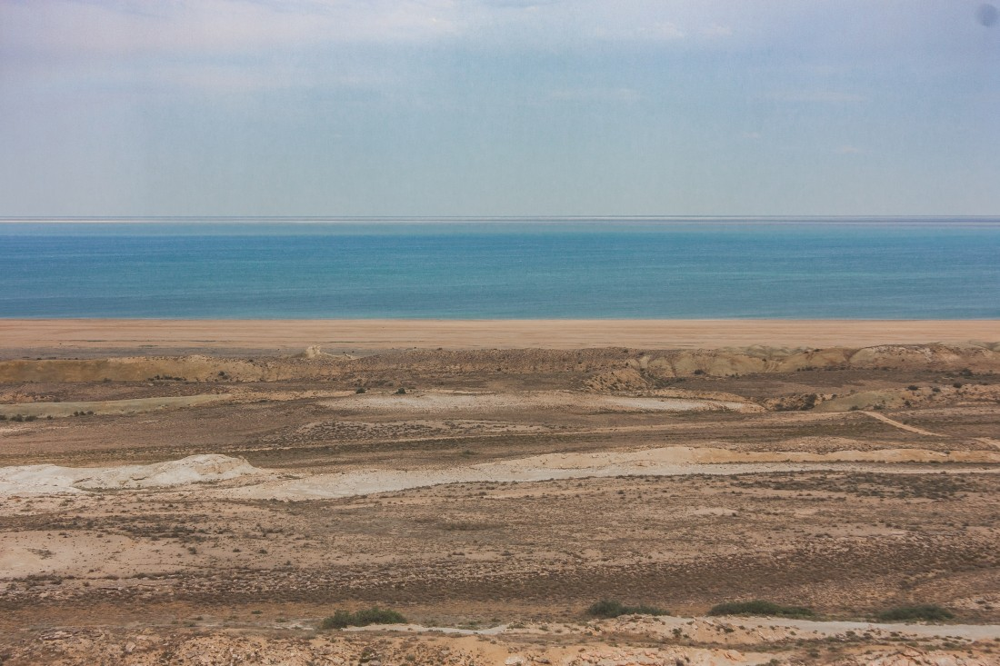
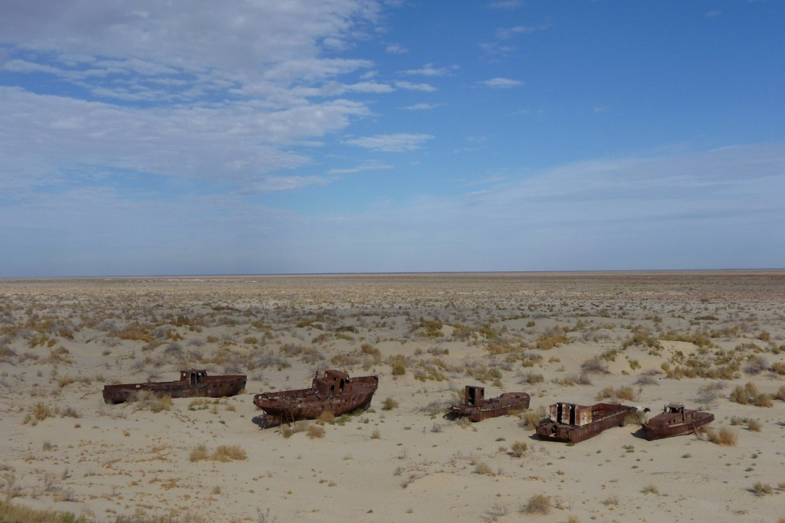
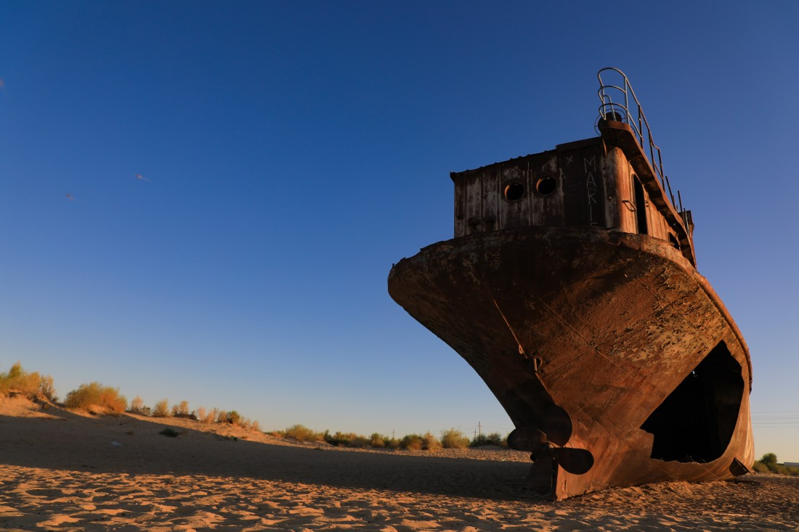
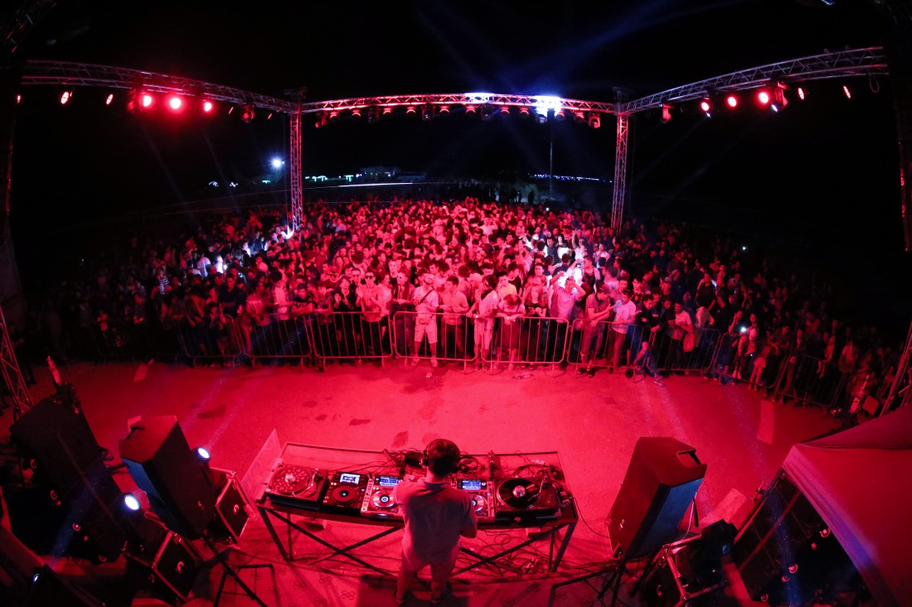

Муйнак - Пустыня в Арале
Город Муйнак был одним из самых больших рыболовецких городов в Средней Азии. Здесь была чистейшая вода с речной рыбой, замечательные пляжи с многочисленными зонами отдыха.
Климат
Климат в Муйнаке имеет небольшую влажность и соответственно не особо дождлив. Зимой бывает очень ветряно и холодно так как из-за климатических изменений, случившихся за последние годы город, оказался фактически в пустыне. Лето жаркое и засушливое, но порой вечером спускается типичная для региона прохлада и порой даже заставляет одеть куртку.
Подарки и сувениры
Сувениры в Муйнаке можно найти в основном в центре города. По большей части это произведения швейного искусства такие как тюбитейки, кошельки, сумки и платки с национальными узорами. Сейчас ведется масштабная подготовка для запуска сувенирного производства с морской тематикой.
Кухня
Муйнак находится на территории Каракалпакстана поэтому заимствует большую часть блюд из местной кухни, но не много на свой лад. Основным блюдом является рыба, так как рядом с городом все еще можно рыбачить, а благодаря суровой погоде, устоявшейся там, рыба — это самое доступное и вкусное блюдо. Также можно отметить, что в каракалпакской кухне есть много мучных блюд и блюд из круп. Пшеничную муку используют для приготовления таких блюд как бауырскаи, нескольких видов лапши и даже лепешки. Еще больше про Узбекскую Кухню Вы сможете прочитать по этой ссылке.
История
Муйнак — город автономного Каракалпакстана в составе Республики Узбекистан. Он находится в 200 км от Нукуса и некогда был расположен на берегу Аральского моря. Сейчас это город привлекает туристов, которые любят экстремальные путешествия. Кладбище кораблей, расположенное не так далеко от города, может порадовать фотографов и погрузить людей не на долго в тот постапокалиптический мир, который показан во многих фильмах.Также на Кладбище кораблей проходит ежегодный Фестиваль абстрактной электронной музыки «Стихия».На мероприятии выступают именитые диджеи, миссия фестиваля – повысить осведомленность мирового сообщества о проблеме Приаральского региона и внести вклад в возрождение акватория Аральского моря.
В наше время Ташкент является современным мегаполисом и прекрасно совмещает в своей архитектуре и средневековые постройки, и современные бизнес центры. В городе есть все условия для прекрасного времяпровождения. Здесь сливается воедино многолетняя история и современный стиль жизни. На территории Ташкента работают два международных аэропорта и 2 железнодорожных вокзала. Одной из основных современных достопримечательностей города считается метро. Оно было открыто в 1977 году и является первым в Центральной Азии. Каждая станция имеет свой неповторимый дизайн и уникальную архитектуру.
Раньше Муйнак был богатым портовым островом в дельте Амударьи — главными морскими воротами Узбекистана. Корабли заходили с грузом топлива, рыбы и продовольствия, а уходили с тюками хлопка. Во второй половине XX века Арал начал исчезать, и на сегодняшний день некогда огромное озеро и бывший портовый городок разделяют около 100 километров.Всё, что осталось от рыболовного флота города находиться на дне бывшего моря у границы города, превратившись в объект интереса фотографов и режиссеров видеоклипов. Сегодня Муйнак имеет статус города-музея и является немым укором для всего человечества, свидетельством экологической катастрофы. Интересно то, что даже после Аральской трагедии в регионе, природа словно помогает человеку – в паре километров от города образовалось пресноводное озеро, которое решило для местного населения проблему с питьевой водой.